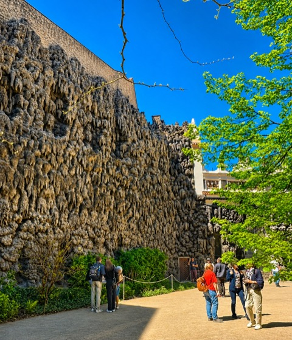

Zehn Orte mit Geschichte – und fünf Prager Legenden im Faktencheck
Wo der Dreißigjährige Krieg begann, wo Mozart den Don Giovanni zum ersten Mal dirigierte und was am Golem auf dem Dachboden dran ist: zehn Orte, an denen Prager Geschichte passiert ist, fünf Legenden, nach denen ich auf fast jeder Tour gefragt werde, und Wege dorthin, die Ihnen die steilen Gassen ersparen.

Lesezeit 14 Minuten

Prag ist von großen Zerstörungen weitgehend verschont geblieben. Die Häuser, in denen Geschichte geschrieben wurde, stehen noch, oft mit denselben Fenstern, Treppen und Sälen. Sie können an das Fenster treten, aus dem 1618 drei Männer geworfen wurden, und im selben Zuschauerraum sitzen, in dem Mozart 1787 seinen Don Giovanni dirigierte.
Für diesen Artikel habe ich zehn Orte ausgewählt, an denen etwas Bestimmtes geschehen ist, mit Datum und Namen. An fünf davon hängt eine Legende, die Sie dort garantiert hören werden. Zu jeder steht dabei, was die Forschung sagt, und zu jedem Ort, wie Sie ohne große Steigung hinkommen. Die Quellen finden Sie am Ende.
„Prag läßt nicht los. Uns beide nicht. Dieses Mütterchen hat Krallen.“
Franz Kafka an seinen Schulfreund Oskar Pollak, 20. Dezember 1902
Die zehn Orte im Überblick
Von oben nach unten sortiert, so besuchen Sie sie am bequemsten.
Fünf Legenden im Faktencheck
Die Behauptung, das Ergebnis und der Ort, an dem Sie die Legende zu hören bekommen.
Loreto: 27 Glocken und 6.222 Diamanten
1626 ließ Kateřina Benigna von Lobkowitz auf dem Hradschin eine Nachbildung des Heiligen Hauses von Loreto errichten. Das Original in Italien gilt als das Haus Marias, das Engel der Überlieferung nach aus Nazareth dorthin getragen haben. Um die Prager Santa Casa wuchs in den folgenden hundert Jahren ein ganzer Wallfahrtsort mit Kreuzgang, Kirche und Glockenturm.
Die Glocken im Turm goss Claude Fremy in Amsterdam. Am 15. August 1695 erklang das Glockenspiel zum ersten Mal, und bis heute spielt es tagsüber zu jeder vollen Stunde ein Marienlied. In der Schatzkammer liegt die „Prager Sonne“: eine Monstranz mit 6.222 Diamanten, 1696 bis 1699 in Wien nach einem Entwurf von Johann Bernhard Fischer von Erlach gefertigt. Die Steine hatte Gräfin Ludmila Eva Franziska von Kolowrat zur Hochzeit bekommen und dem Loreto vermacht.
Alter Königspalast: das Fenster von 1618
Am Morgen des 23. Mai 1618 zog eine Gruppe protestantischer Adliger in die Böhmische Kanzlei im Alten Königspalast. Sie warfen den kaiserlichen Statthaltern Jaroslav Bořita von Martinitz und Wilhelm Slavata vor, die zugesicherte Religionsfreiheit zu brechen, hielten ein improvisiertes Gericht und warfen beide aus dem Fenster. Ihr Sekretär Philipp Fabricius folgte. Der Sturz ging rund 16 Meter tief in den Burggraben, und alle drei überlebten.
Aus dem Fenstersturz wurde der Böhmische Ständeaufstand und daraus der Dreißigjährige Krieg. Wie er für Böhmen ausging, sehen Sie bei Ort 6: Nach der Niederlage der Stände ließ der Kaiser am 21. Juni 1621 auf dem Altstädter Ring 27 ihrer Anführer hinrichten.

„Sie überlebten, weil sie auf einem Misthaufen landeten.“
Dass alle drei überlebten, ist sicher. Warum, war schon damals eine Glaubensfrage. Die katholische Seite sprach von Engeln und der Jungfrau Maria, die die Männer aufgefangen hätten. Protestantische Flugschriften erzählten vom Misthaufen im Graben, und diese Version hören Sie heute auf fast jeder Führung. Belegen lässt sich keine von beiden. Fabricius erhob der Kaiser später in den Adelsstand, mit dem Beinamen „von Hohenfall“.
Waldsteingarten: der Palast eines Feldherrn
Albrecht von Waldstein, im Dreißigjährigen Krieg Oberbefehlshaber der kaiserlichen Truppen und einer der reichsten Männer im Reich der Habsburger, ließ sich zwischen 1623 und 1630 unterhalb der Burg einen Palast bauen, der es mit ihr aufnehmen sollte. Dafür wurden 26 Häuser abgerissen. Italienische Baumeister legten den Garten an, mit der Sala terrena, einer offenen Halle mit Fresken zum Trojanischen Krieg, und mit einer Wand aus künstlichen Tropfsteinen, in der Besucher bis heute nach versteckten Gesichtern suchen.
Viel hatte Waldstein nicht davon. Er wohnte nur etwa ein Jahr im Palast, 1634 ließ ihn der Kaiser, der ihm nicht mehr traute, in Eger ermorden, dem heutigen Cheb. 1648 nahmen schwedische Truppen die Bronzefiguren von Adriaen de Vries aus dem Garten mit. Die Originale stehen im Schlosspark von Drottningholm bei Stockholm, in Prag sehen Sie Kopien aus dem 20. Jahrhundert. Im Palast tagt heute der tschechische Senat.

Karlsbrücke: ein Grundstein zur rechten Minute
Karl IV. ließ die Brücke als Ersatz für die Judithbrücke bauen, die 1342 dem Eisgang zum Opfer gefallen war. Den Grundstein legte er der Überlieferung nach am 9. Juli 1357 um 5:31 Uhr. Als Zahlenreihe geschrieben ergibt das 1-3-5-7-9-7-5-3-1, vorwärts wie rückwärts gleich. Den Termin sollen die Hofastrologen ausgesucht haben.
Fertig war die Brücke erst Anfang des 15. Jahrhunderts, die Statuen kamen ab dem späten 17. Jahrhundert dazu. Die älteste ist der heilige Johannes Nepomuk von 1683. Er war 1393 auf Befehl König Wenzels IV. von dieser Brücke in die Moldau gestürzt worden.

„Im Mörtel der Karlsbrücke stecken Eier.“
Karl IV. soll aus dem ganzen Land Eier angefordert haben, damit der Mörtel besser hält. Die Bürger von Velvary schickten ihre hart gekocht, damit sie unterwegs nicht zerbrechen, und wurden dafür jahrhundertelang verspottet. Die Wissenschaft hat zweimal nachgesehen. 2008 meldeten Chemiker der Prager Hochschule für chemische Technologie (VŠCHT) Spuren von Eiweiß im Originalmörtel. Kurz darauf untersuchten Geologen der Karls-Universität den Mörtel und fanden keine organischen Zusätze, nur hydraulischen Kalk. Die Frage ist bis heute offen.
Altneusynagoge: der Dachboden ohne Treppe
Die Altneusynagoge stammt aus dem 13. Jahrhundert. Sie ist die älteste erhaltene Synagoge nördlich der Alpen und die älteste in Europa, in der bis heute Gottesdienste stattfinden. Sie hat Pogrome und Brände überstanden und auch die Assanierung um 1900, bei der fast das gesamte jüdische Viertel abgerissen wurde.
Hier wirkte im 16. Jahrhundert Rabbi Juda Löw ben Bezalel, genannt Maharal, Oberrabbiner von Prag und einer der großen Gelehrten seiner Zeit. Sein Grab mit dem Löwen auf dem Stein liegt wenige Minuten entfernt auf dem Alten Jüdischen Friedhof.

„Auf dem Dachboden der Altneusynagoge liegt der Golem.“
Rabbi Löw soll aus Moldaulehm eine Gestalt geformt und sie mit dem Schem, einem Zettel mit dem Namen Gottes im Mund, zum Leben erweckt haben. Als er einmal vergaß, den Schem vor dem Sabbat herauszunehmen, wütete der Golem durch das Viertel. Die Reste soll der Rabbi auf dem Dachboden der Synagoge verwahrt haben. Historisch ist daran nichts: Die Geschichte wurde erst lange nach Löws Tod mit ihm verbunden und im 19. Jahrhundert aufgeschrieben. Bei der Renovierung 1883 und bei einer Begehung 2014 fand man auf dem Dachboden nichts. Von der Pařížská-Straße aus sehen Sie trotzdem die kleine Tür unter dem Dach und die Eisenstufen hinauf, deren unterste drei Meter fehlen.
Altstädter Rathaus: eine Uhr seit 1410
Das Altstädter Rathaus wurde 1338 gegründet, sein Turm war 1364 fertig. 1410 baute Mikuláš von Kadaň die astronomische Uhr an die Südseite, Ende des 15. Jahrhunderts verbesserte sie Meister Hanuš. Sie zeigt neben der Uhrzeit den Lauf von Sonne und Mond, die Tierkreiszeichen und die altböhmische Zeit, in der der Tag mit dem Sonnenuntergang begann. Zu jeder vollen Stunde ziehen oben die zwölf Apostel an den Fenstern vorbei.
27 Kreuze im Pflaster vor dem Rathaus erinnern an die Anführer des Ständeaufstands, die hier am 21. Juni 1621 hingerichtet wurden. Und falls Sie sich fragen, warum dem Rathaus ein Flügel fehlt: Der Ostflügel brannte im Prager Aufstand im Mai 1945 aus und wurde nie wieder aufgebaut. Damals verbrannten auch die Apostelfiguren. Die heutigen schnitzte Vojtěch Sucharda 1948.
„Die Ratsherren ließen den Erbauer der Uhr blenden.“
Damit Meister Hanuš für keine andere Stadt eine schönere Uhr bauen konnte, sollen ihn die Prager Ratsherren geblendet haben. Hanuš rächte sich, griff in das Werk und brachte es zum Stehen. Alois Jirásek machte die Sage 1894 in seinen „Alten böhmischen Sagen“ berühmt. Einen Beleg gibt es nicht, und gebaut hat die Uhr ohnehin Mikuláš von Kadaň. Einen wahren Kern hat die Geschichte trotzdem: 1865 blieb die Uhr tatsächlich stehen, und man erwog, sie abzubauen. Der Prager Uhrmacher Ludvík Hainz setzte sie wieder in Gang.
Teynkirche: das Grab von Tycho Brahe
Der dänische Astronom Tycho Brahe kam 1599 als Hofastronom Rudolfs II. nach Prag. Seine Beobachtungen der Planeten waren die genauesten seiner Zeit. Mit ihnen fand sein Assistent Johannes Kepler nach Brahes Tod die Gesetze der Planetenbewegung. Brahe starb am 24. Oktober 1601, elf Tage nach Beginn einer plötzlichen Krankheit, und wurde in der Teynkirche beigesetzt. Sein Grabstein aus rotem Marmor zeigt ihn in Rüstung.
„Tycho Brahe wurde vergiftet.“
Um Brahes Tod ranken sich zwei Geschichten. Die ältere stammt von Kepler: Brahe habe bei einem Bankett aus Höflichkeit den Tisch nicht verlassen und sich dabei die Blase ruiniert. Die zweite kam 1996 auf, als Haar- und Bartproben aus einer Graböffnung von 1901 erhöhte Quecksilberwerte zeigten. Seitdem stand der Verdacht im Raum, jemand habe nachgeholfen, manche verdächtigten sogar Kepler. 2010 öffneten dänische und tschechische Forscher das Grab erneut, 2012 lag das Ergebnis vor: Die Quecksilberwerte in Knochen und Bart waren nicht hoch genug für eine Vergiftung. Nebenbei stellte sich heraus, dass Brahes Nasenprothese, die er nach einem Duell trug, nicht aus Silber war, sondern aus Messing.
Ständetheater: Mozarts Prager Premiere
Graf Franz Anton Nostitz-Rieneck ließ das Theater auf eigenem Grund bauen. Am 21. April 1783 wurde es eröffnet, über dem Eingang steht bis heute „Patriae et Musis“, dem Vaterland und den Musen. In Prag war Mozart beliebter als in Wien. Nach dem Erfolg des Figaro bekam er hier den Auftrag für eine neue Oper, und am 29. Oktober 1787 dirigierte er vom Cembalo aus die Uraufführung des Don Giovanni. Die Prager Oberpostamtszeitung meldete, Kenner und Musiker hätten dergleichen in Prag noch nicht gehört.
1791 kam Mozart ein letztes Mal und dirigierte hier die Uraufführung von La clemenza di Tito zur Krönung Leopolds II. zum böhmischen König. Das Ständetheater ist das einzige erhaltene Theater, in dem Mozart selbst eine Uraufführung dirigiert hat. Vor dem Eingang steht die Skulptur „Il Commendatore“ von Anna Chromý, ein leerer Mantel, der an den steinernen Gast aus der Oper erinnert.
Wenzelsplatz: Jan Palach und der Balkon von 1989
Der Wenzelsplatz ist eigentlich ein Boulevard von gut 700 Metern Länge, angelegt unter Karl IV. als Pferdemarkt der Neustadt. Am oberen Ende vor dem Nationalmuseum zündete sich am 16. Januar 1969 der Student Jan Palach an, aus Protest gegen die Resignation nach dem Einmarsch der Truppen des Warschauer Pakts im August 1968. Er starb drei Tage später. Ein Kreuz im Pflaster vor dem Museum erinnert an ihn und an Jan Zajíc, der sich gut einen Monat später ebenfalls am Wenzelsplatz verbrannte.
Im November 1989 füllten Hunderttausende den Platz. Vom Balkon des Melantrich-Hauses, Nummer 36, sprachen Václav Havel und Alexander Dubček zu ihnen. Am 29. Dezember 1989 wurde Havel zum Präsidenten gewählt.
Faust-Haus: ein Loch in der Decke
Am Südende des Karlsplatzes steht ein barockes Palais, das in Prag jeder als Faust-Haus kennt. Mit dem historischen Johann Georg Faust lässt es sich nicht in Verbindung bringen, mit Alchemisten schon: Zu den Besitzern gehörte der Engländer Edward Kelley, der Kaiser Rudolf II. Gold aus unedlen Metallen versprach. Der Sage nach holte der Teufel Faust in diesem Haus durch die Decke, und das Loch ließ sich nie wieder schließen.
Goethe, der den Faust zur Weltliteratur gemacht hat, war siebzehnmal in Böhmen. Nach Prag kam er nie.
Ohne Bergauf: praktische Hinweise für alle zehn Orte
Viele meiner Gäste sind über 65, und fast alle merken am ersten Tag, dass Prag hügeliger ist, als der Stadtplan vermuten lässt. Diese Hinweise gebe ich allen, die mit mir unterwegs sind.
- Ab 65 fahren Sie kostenlos. Metro, Straßenbahn und Bus kosten in Prag ab 65 Jahren nichts. Sie brauchen keinen Fahrschein, aber einen amtlichen Ausweis mit Foto und Geburtsdatum, den Sie bei einer Kontrolle vorzeigen. Zwischen 60 und 65 zahlen Sie den halben Preis.
- Oben anfangen. Fahren Sie mit der Tram 22 oder 23 bis Pohořelec oder Pražský hrad und gehen Sie von dort bergab. Der Aufstieg zur Burg durch die Nerudova-Gasse ist die anstrengendste Strecke der Innenstadt.
- Straßenbahnen haben Vorrang. Auch am Zebrastreifen hat die Tram in Prag Vorrang vor Fußgängern. Schauen Sie vor jedem Gleis nach beiden Seiten.
- Fahrscheine für Begleiter unter 65. Papierfahrscheine entwerten Sie beim ersten Einsteigen und beim Umsteigen nicht noch einmal, sonst werden sie ungültig. Einfacher ist das Terminal in der Mitte jeder Straßenbahn: Dort zahlen Sie mit Karte, und der Fahrschein muss nicht entwertet werden.
- Früh kommen. Im Altstädter Rathaus kostet der Eintritt in der ersten Stunde nach Öffnung die Hälfte, und auf der Karlsbrücke sind Sie vor acht Uhr fast allein.
- Eingelaufene Schuhe. Altstadt, Karlsbrücke und Burg sind mit Kopfsteinpflaster belegt. Feste Schuhe mit weicher Sohle, die Sie schon getragen haben, sind wichtiger als jede Route.
- Samstags ist das jüdische Viertel zu. Die Altneusynagoge und die Häuser des Jüdischen Museums sind samstags und an jüdischen Feiertagen geschlossen.
Wenn Sie diese Orte lieber mit jemandem besuchen, der die Geschichten dazu erzählt und das Tempo nach Ihnen richtet: Ich führe privat und auf Deutsch, und ich lege die Route so, dass Sie keine Treppe steigen müssen, die Sie nicht steigen wollen.
Quellen
- Prague City Tourism: Loreto; Loreta Praha: The Diamond Monstrance
- Radio Prague International: Blood in Bohemia: the Second Defenestration of Prague
- Prague City Tourism: Waldstein Palace; Wikipedia: Wallenstein Palace
- Prague Now: Charles Bridge: built with a curve and with egg; Medieval News (nach ČTK), 19. 1. 2010: Eggs not used to build medieval bridge in Prague
- Prague City Tourism: The legend of the Golem; Wikipedia: Old New Synagogue; Milken Archive: The Golem
- Prague City Tourism: Old Town Hall with Astronomical Clock (Geschichte, Preise und Öffnungszeiten)
- Aarhus University, 15. 11. 2012: Mercury poisoning ruled out as cause of Tycho Brahe’s death
- Prague City Tourism: Estates Theatre; Wikipedia: Mozart and Prague
- Prague City Tourism: Faust’s Prague
- Prague City Tourism: Public transport (Fahrpreise und Ermäßigungen)
- Franz Kafka: Brief an Oskar Pollak, 20. Dezember 1902